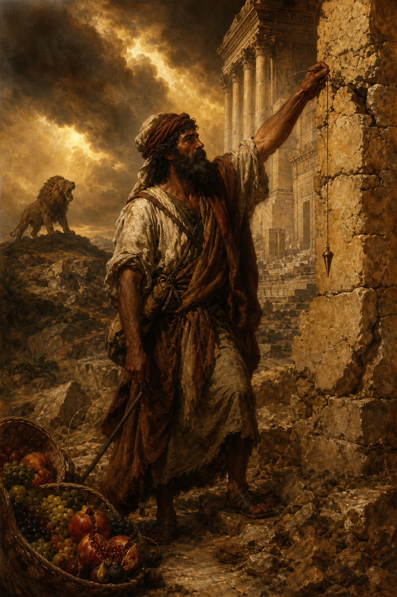

Old Testament · Book 30 of 39
Amos
A shepherd from Tekoa walks north into a prosperous kingdom and announces that its luxury, religion, and self-confidence are about to collapse under the weight of the poor it has crushed.
Amos has no priestly credentials and no royal connections — just a herdsman's eye for what is broken. He travels from Judah into Israel's wealthy northern kingdom and delivers the harshest indictment in the Minor Prophets: a nation drunk on prosperity while trampling the poor underfoot.
But let judgment run down as waters, and righteousness as a mighty stream.
What happens in Amos
The book opens with a sweeping courtroom scene: God pronounces judgment on Israel's neighboring nations one by one for their war crimes, drawing Israelite listeners into nodding agreement — until the indictment turns and lands squarely on Israel and Judah themselves, for selling the righteous for silver and trampling the poor into the dust of the earth. Amos exposes a society that keeps every religious festival and sacrifice while cheating in the marketplace, bribing judges, and ignoring the needy, and he insists that worship without justice is noise God refuses to hear. Five visions follow — locusts, fire, a plumbline held against a crooked wall, a basket of summer fruit signaling Israel's ripeness for judgment, and the Lord standing at the altar in the temple — each tightening the certainty that judgment is coming and unavoidable. A priest named Amaziah tries to silence Amos and send him home, but Amos insists he is no professional prophet, just a shepherd and fig-dresser whom the LORD took and commanded to speak. The book's final verses pivot sharply from ruin to restoration, promising that the fallen house of David will be raised up and the land itself will overflow with abundance again.
Why it matters
Amos refuses to let religious observance substitute for justice, insisting that how a society treats its poorest members is itself a form of worship or blasphemy. His image of justice rolling down like a mighty, unstoppable stream has echoed through centuries of reform movements as a demand that faith prove itself in how the vulnerable are treated.